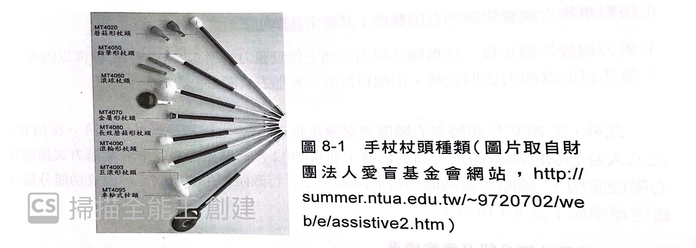

種類簡介

請先觀看影片介紹
手杖頭總類
手杖杖頭常見會有磨菇頭、鉛筆頭、滾球頭等。 以初學者來說，會建議使用磨菇頭與鉛筆頭；手腕較無力與容易顫抖者，建議使用滾輪型
手杖長度選擇
手杖長度的選擇，大多都會以視障者本身的身高為基準來測量，大致上選擇會是:『手杖的長度大概從地板至視障者的胸部或胸部上方５公分內』都是理想長度。
小試身手
下列敘述正確請打O，錯誤請打X
( )手杖長度以持杖者的身高為基準
( )手杖長度以地板為基準，整體長度落在肩膀上下5公分是理想長度
( )手杖頭若是磨菇頭，鉛筆頭等總類，比較適合熟悉操作手杖之視障者來使用